Welcome to
Build a Software Factory
Day 1 of 8 · Tuesday 29 September

Why we're here today
To connect you with...
Your instructors, for the next four weeks.
Start getting to know your classmates.
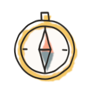
How to succeed here, and where we're going.
Today
Who we are
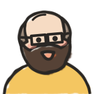
Cucumber co-founder and creator of Example Mapping. Programming since the mid-80s. Nelson, BC.
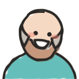
Building with AI agents since 2023. Author of Stone, an agentic harness framework. Former General Assembly instructor.
25 years of DevOps, SRE and release engineering at Pivotal, VMware and Shopify. Dublin.
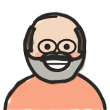
Co-creator of Lean Coffee. Developer and lean coach turned executive coach for the AI era.
The flipped classroom
Study and practice at your own pace.
bring what you tried
take back what you learned
We make sense of it together.
Two tracks, all four weeks


The four weeks
homework
over the weekend
The more you talk,
the more you will learn
Today
Let's connect
- Five rounds, a new partner each time
- Start by introducing yourselves, then take turns on the question
- Rounds 1 to 3: 4 minutes, 2 each. Rounds 4 and 5: 6 minutes, 3 each
- We'll tell you when to swap. Same question again: say it a bit better each time
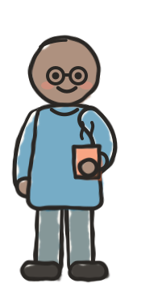
Round 1

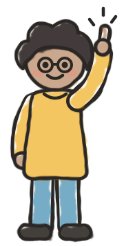
4 minutes · swap at 2
Round 2 · new partner
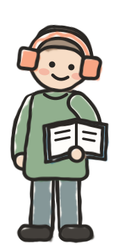
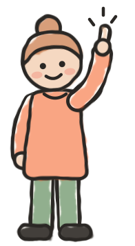
Same question, new partner · 4 minutes · swap at 2
Round 3 · new partner
Same question, new partner · 4 minutes · swap at 2
Your hopes and fears for the course
What did you say in rounds 1 to 3? Raise your hand when you're ready.
A good capstone
What makes a good one?
- Something you'd like to exist in the world
- Ambitious
- Daunting, even
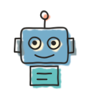
You won't build it by hand. Your factory will.Round 4 · new partner
6 minutes · swap at 3 · push each other bigger
Round 5 · new partner
Same question, new partner · 6 minutes · swap at 3
Today
Let's watch a real
factory in action
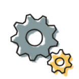
Today
What else?
- What haven't we covered?
- Something you want to share that seems important?
- Questions about where we're headed?
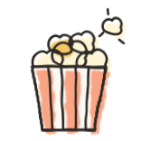
Today
Before Thursday
- Write up 3 ideas for your capstone project
- Run the Ralph loopAlready have? Try the Fabro Ralph loop instead.
- Watch “Software Factory: a working definition”About 10 minutes, from the lightning lesson
Check out
See you Thursday!